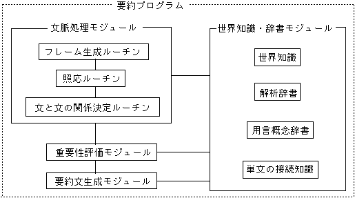

マ シ ン：PSI 環 境：SIMPOS 言 語：ESP ソース量：3 MB 文 書：マニュアル (日本語／英語)

文脈処理モジュールは、意味表現中の単語をフレーム、スロットの属性、属性 値に変換する「フレーム生成ルーチン」、指示関係によりフレームを結びつけ る「照応ルーチン」、照応関係と接続詞を用いて単文同士の関係を決定する 「文間関係決定ルーチン」の３つのルーチンからなる。文脈処理モジュールの 出力は、照応関係とネットワーク形式の文章構造である。
重要性評価モジュールは、文章構造に対して重要性評価基準を適用し、単文の 重要性を評価する。要約文生成モジュールは、この評価値の大きい単文を抜粋 し、要約文とする。